Scene 1Warm-Up
▶ Start hereHow your Wonder Films lessons work1-minute videoOpen ▾
🎯 TodayI can…
- describe what makes the Everglades a unique habitat.
- use evidence to explain why some organisms survive in the Everglades and others cannot.
- make a claim about how the Everglades protects nearby communities from flooding.

🔎 Mystery specimenWhat is this golden plant?
What to do: Press Inspect specimen. Move the magnifying lens over the plant, then tap 3 things you notice.

📚 Word WallWords scientists use
What to do: Tap or click each card to flip it and read what the word means.
Scene 2The Lesson
🌱 Part 1A River of Grass
The Everglades isn't a lake or a pond. Scientists call it a river of grass. Water moves slowly south through miles of sawgrass, just a few inches deep. The land is almost flat and almost always wet, so it is a wetland.
South Florida has two seasons. In the wet season, summer storms fill the marsh. In the dry season, the water shrinks, and animals change what they do.
🎞️ Put the scenes in orderWhat happens in the Everglades in one year?
What to do: Drag each photo into the film strip, from first to last. You can also tap a photo, then tap a frame. Get the order right and your strip becomes a movie.
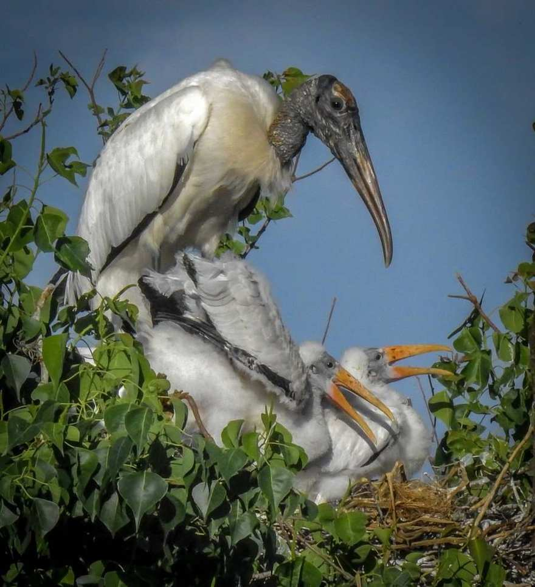
Max says, "The Everglades is just a still swamp. The water never moves." What do you think?
🌤 Part 2Who Fits In Here?
Animals adapted to warm, shallow water live here. Alligators wait in pools. Herons and spoonbills catch fish. They fit this habitat like a key in a lock.
Not every animal fits. A polar bear, built for ice and freezing cold, could not survive here.
🧪 The Fit TestWhich home fits which body?
What to do: Follow the steps one at a time. You will pick, test, and then explain.
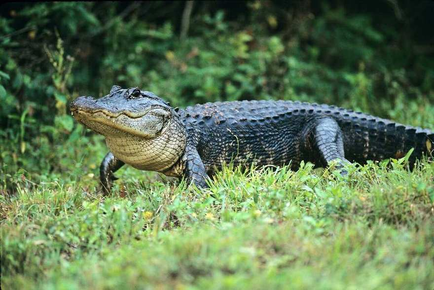
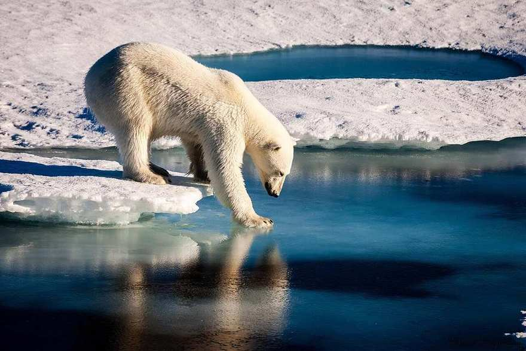
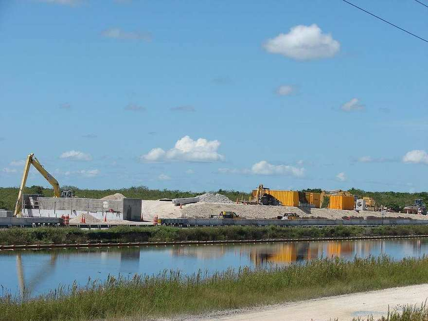
🌍 Part 3Water, Floods, and Protection
When big storms hit South Florida, the Everglades soaks up rain like a giant sponge. That slows flooding and protects nearby farms and cities.
Engineers are working on the largest wetland restoration in the United States, so the water can flow south again.
🥾 The Glades WalkWalk south from high ground to the salty sea
What to do: First, make a prediction. Then brush the glowing step: drag across it (or tap it again and again) until the photo shows.
Is the Everglades the same everywhere, or does it change as you walk south?
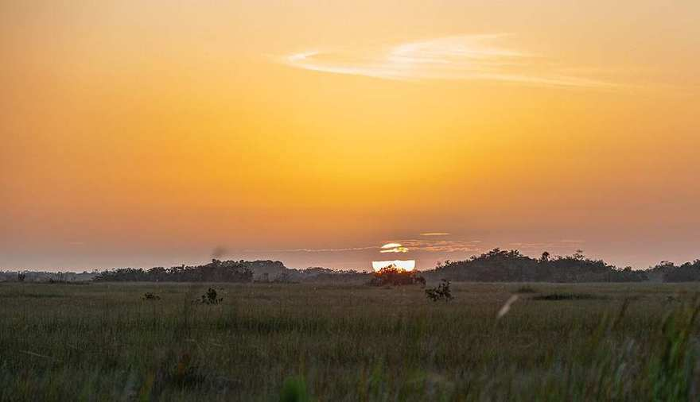
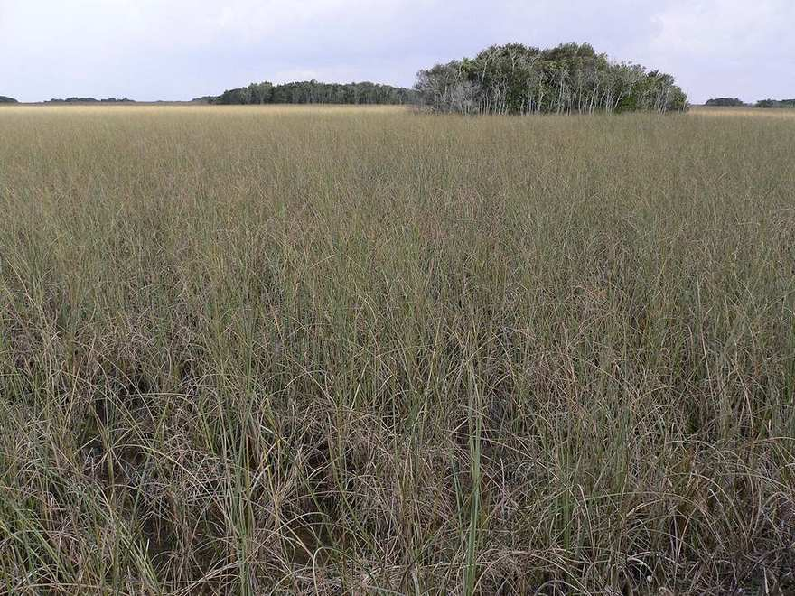
Stop 1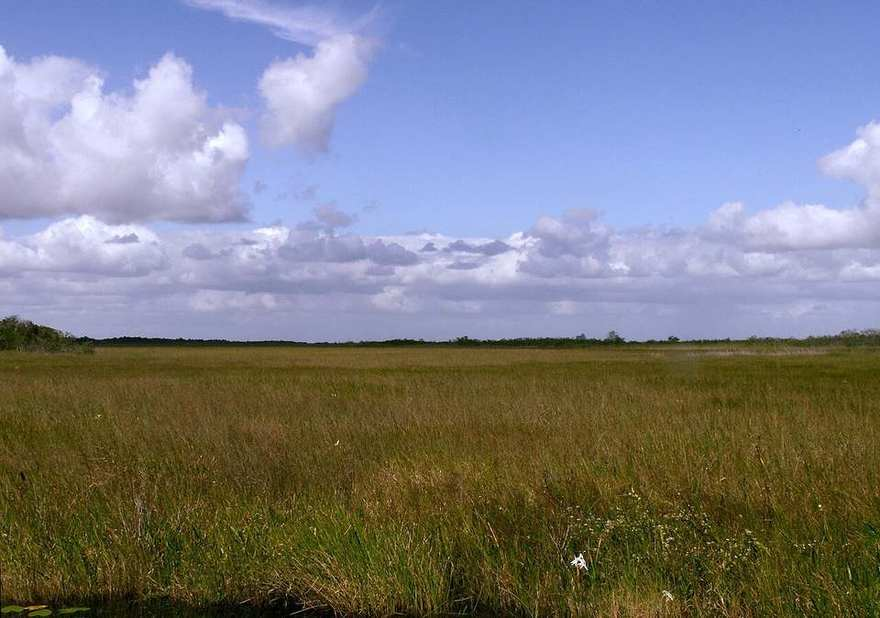
Stop 2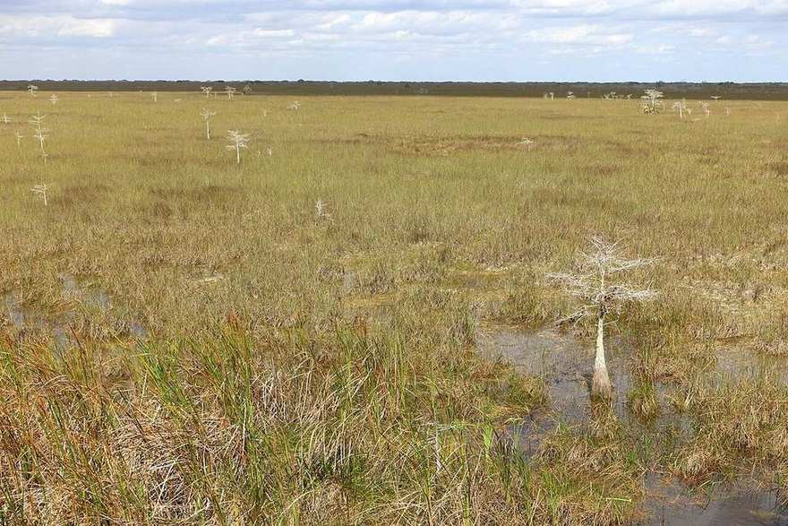
Stop 3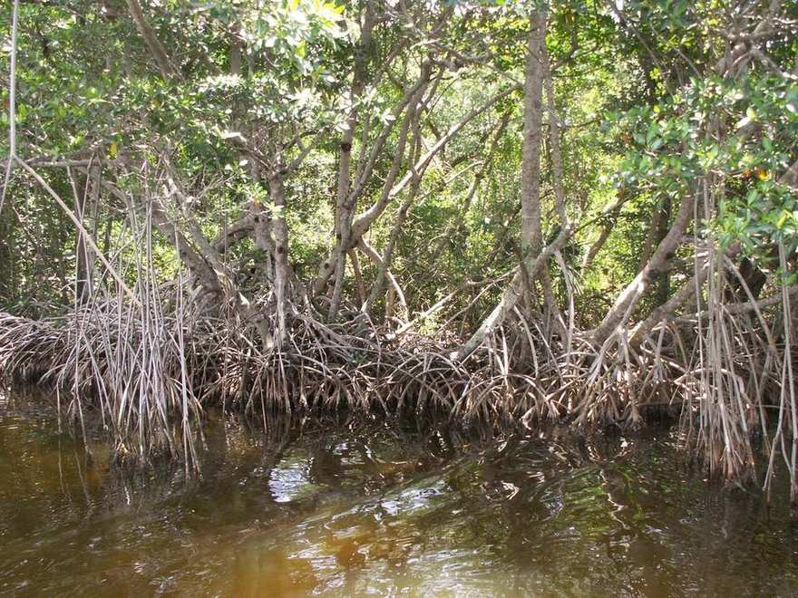
Stop 4Each zone is a different habitat. Small changes in height, water depth, and salt decide which plants and animals can live there.
Ava says, "If a polar bear moved to the Everglades, it would just get used to the heat." What do you think?
Alligators and Crocodiles, Side by Side
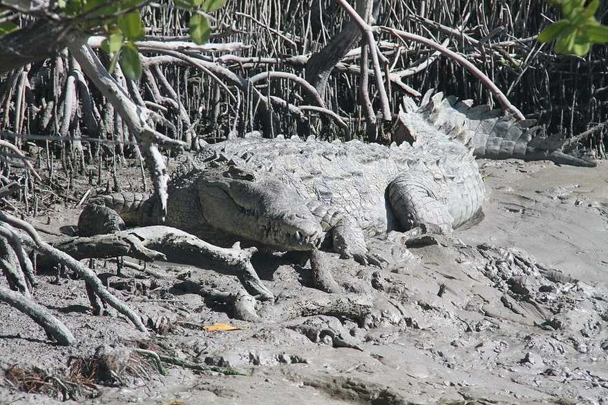
The Everglades is the only place in the world where alligators and crocodiles live side by side.
Alligators like fresh water. Crocodiles like the salty edges of the coast. The Everglades has both, so it has both!
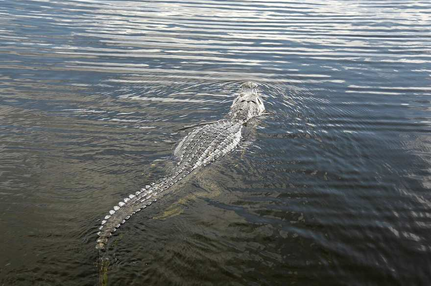
🕵️ Part 4Fit or Not? Files
What to do: Pick 3 cards, one at a time. Tap a clue, then name what the animal needs. Predict how well it survives in the Everglades, and watch its home appear.
| Card | My observation | What it needs | In the Everglades | My evidence |
|---|
🌍 Rebuild the sceneUse your evidence to rebuild the scene OPTIONALOpen ▾
What to do: Pick one you solved. Pick the place it points to, then pick the living things that belong there.
Pick one from your chart and explain it.
Start with: "Card __ shows…"
Scene 3Self-Check
What do scientists call the Everglades because water moves slowly through a vast field of grass?
An animal that needs dry land, cool temperatures, and thick forest would most likely _____ in the Everglades.
How does the Everglades help protect nearby communities when big storms bring heavy rain?
Scene 4Assignment
🔍 Part ASort and identify
What to do: Read each one. Pick the best answer, or type your answer.
1. An alligator that loves warm, shallow, slow-moving fresh water and can hold its breath underwater for a long time.
2. A black bear that needs dry forest ground, berries, and places to den and raise cubs.
3. A roseate spoonbill that catches tiny fish by sweeping its bill through warm, shallow water.
4. A polar bear that needs sea ice and freezing temperatures to hunt and stay cool.
🚀 Part BShort answer
What to do: Answer in complete sentences. Use your science words.
1. Name two features of the Everglades that make it a unique habitat. Why does each one matter for the animals that live there?
2. Why does it matter that water flows slowly through the Everglades, rather than drying up completely? What would change for the animals?
✍️ Write and explainWhy can some animals survive well in the Everglades while others cannot survive there at all? Use evidence from your investigation.
What to do: Pick one from your evidence chart. Answer the three questions. Use at least one of the science words under the boxes.
Start with: "I think that some animals survive in the Everglades because…"
Start with: "I know this because the lesson showed that…"
Start with: "This makes sense because…"
🎨 Part CDraw and label
What to do: Draw one animal that survives well in the Everglades, in its Everglades home. Show the water and plants around it. Then write two labels.
🎬 Your question from Scene 1Can you answer it now?
What do you still wonder about? Write your question here. Then answer it.
📋 My answersEverything you wrote, in one place
(Your answers show up here as you write.)
How to turn in: Copy your answers and paste them into the Canvas assignment. Or download the file and upload it. Then press Save my drawing in Part C and upload your drawing too.
✅ Checklist
What to do: Tap each item when it is done. Items you finish on the page check themselves.
- My evidence chart has 3 animal cards and my explanation.
- Part A: all four animals sorted.
- Part B: questions 1 and 2.
- Part C: my drawing and both labels.
- Write and explain, with at least one science word.
🎬 Premiere my Everglades storyYour exhibit
What to do: Check your exhibit. Pick the one you wrote about, add your first name, then press Premiere film.
I observed…
What the animal needs…
My evidence…
It tells us…
🎞️ This film's frames
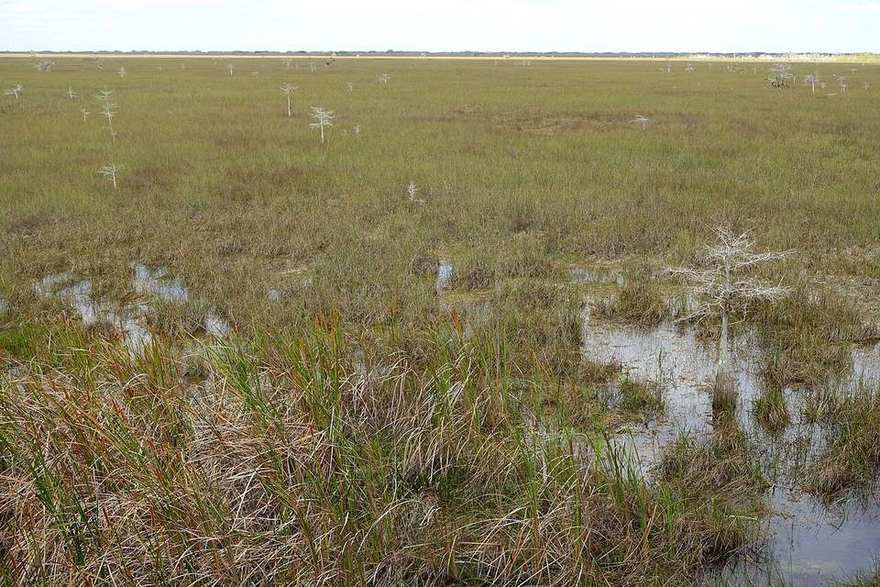
A year in the Glades
The Fit Test
The Glades Walk
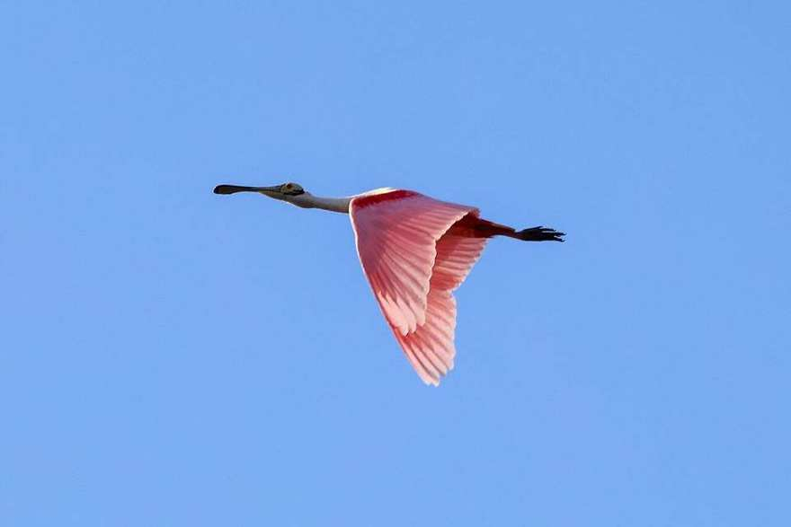
Fit or not?
Earn all four frames in the Lesson, then finish the checklist.
🔜 Coming up nextComing up next: 29.02
Investigation: Everglades Food Web. Next time, build a food web and follow the energy from sawgrass to alligators.
Photo and music credits
- Tamiami Bridge Construction (5), NPSPhoto, 2011 (9250164284), evergladesnps, Public domain
- American Alligator - Anhinga Trail, Everglades National Park, Homestead, Flor…, Judy Gallagher, CC BY 2.0
- A tree island in a sawgrass prairie in the Everglades, Moni3, Public domain
- Roseated spoonbill Everglades NP Brendan Burke (55249208100), USFWS Headquarters, Public domain
- North Nest Key, Florida Bay (2), NPSPhoto (9247241295), Everglades NPS from Homestead, Florida, United States, Public domain
- A Florida Black Bear, Florida Fish and Wildlife Conservation Commission, Public domain
- Big Cypress National Preserve BICY1060, National Park Service Digital Image Archives, Public domain
- Polar Bears Across the Arctic Face Shorter Sea Ice Season (29664357826) (2), NASA Goddard Space Flight Center from Greenbelt, MD, USA, Public domain
- North Pole, Arctic Ocean, sea ice 04, Matti&Keti, CC BY-SA 4.0
- American Crocodile Survey (54436847119), evergladesnps, Public domain
- Hells Bay Aerial View (1), NPSPhoto (9247500709), Everglades NPS from Homestead, Florida, United States, Public domain
- Tropical hardwood hammock on Everglades National Park Mahogany Hammock Trail, Miguel.v, CC BY-SA 3.0
- Pahayokee area, NPSPhoto (9101714242), Everglades NPS from Homestead, Florida, United States, Public domain
- Anhinga Trail (53558084704), evergladesnps, Public domain
- Mangroves in river of grass, NPSphoto, G.Gardner (cropped), Everglades NPS from Homestead, Florida, United States deriva, Public domain
- Gator on Anhinga Trail (5632544106), Everglades NPS from Homestead, Florida, United States, Public domain
- Sawgrass Prairie NPS Photo G Gardner (42295786392), evergladesnps, Public domain
- River of Grass (1), NPSPhoto, Brian Call (9101714682), Everglades NPS from Homestead, Florida, United States, Public domain
- Roseate Spoonbill, NPSPhoto (9101514610), Everglades NPS from Homestead, Florida, United States, Public domain
- Sunset in Everglades (53409023763), evergladesnps, Public domain
- Shark River Slough - Everglades National Park - DSC09453, Daderot, CC0
- 150th Anniversary of U S Department of Agriculture-Historical imagery (201201…, USDAgov, Public domain
- Shark River Slough, NPSPhoto (9099482643), Everglades NPS from Homestead, Florida, United States, Public domain
- Everglades Sawgrass Prairie Moni3, Moni3, CC BY 3.0
- Shark River Slough - Everglades National Park - DSC09461, Daderot, CC0
- Everglades mangroves Buttonwood Canal, Moni3 at English Wikipedia, Public domain
- Summer T-storm, NPSPhoto (9257940598), Everglades NPS from Homestead, Florida, United States, Public domain
- Shark River Slough - Everglades National Park - DSC09443, Daderot, CC0
- Alligator Point at Anhinga Trail (40513287835), evergladesnps, Public domain
- Everglades - Shark Valley - Wood Storks ((mycteria americana) and a pair of R…, Murray Foubister, CC BY-SA 2.0
- Wood Stork Nest with Chicks (49516852181), Trish Hartmann from Tampa, Florida, USA, CC BY 2.0
- Cladium jamaicense, Hans Hillewaert, CC BY-SA 3.0
- 150th Anniversary of U S Department of Agriculture-Historical imagery (201201…, USDAgov, Public domain
- American crocodile in Flamingo, Florida, Chaputjp, CC BY-SA 3.0
- Music: Water Music, Suite No. 2, Alla hornpipe (George Frideric Handel), United States Marine Band Chamber Orchestra, public domain recording (via Wikimedia Commons).
- Opti the owl: Optima Academy. Sound effects are made by the page. The year-in-the-Glades movie, the Fit Test, and the Glades Walk are models; every place photo is real. The Fit Test is a model: no animals are tested.